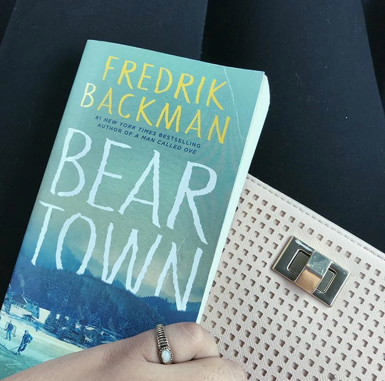

The Lias Blog
Six of Crows by Leigh Bardugo | Book Review
by Alia Khan
October 14th, 2018

We are part of a book club that we started with our friends sometime last year. Since beginning this blog we have wanted to share our picks and thoughts with you. We’d love for you to follow us through our book club readings!
Read along (we aim to do one book a month) and share your opinions with us in the comments!
Book Summary
The cover says it all: “Six dangerous outcasts. One impossible heist.”
A bunch of seventeen-year-olds (joking but not really) form an offbeat crew to go on a suicide mission for a ton of cash (and bragging rights).
This book is part of a duology, with the second book entitled the Crooked Kingdom, that takes places in... the Grisha universe (also penned by Bardugo).
Our Thoughts:
Alia
I honestly didn’t like the book at first and it was really hard for me to get into. I think the first chapter or “prologue” didn’t interest me at all. It wasn’t until I was reading about the main characters that I was intrigued.
My favourite character was Inej, her chapters were always my favourite. She’s a character with a lot of complexity – there is her religious beliefs, her unique background and personal tragedies, mixed in with her current life and the fact that she probably has the worst taste in men (here’s looking at you, Kaz). I also like her because even though she isn’t a Grisha (a person born with mystical abilities), she is extraordinary in her own way. She is quiet, graceful, an acrobat and a secret stealer. She’s on the cusp of being dangerous, and growing into that personality trait with her is a rush.
The world-building itself is also interesting. Apparently, this is the second set of books taking place in the author’s universe. The first being the Shadow and Bone series, which explains what Grisha are, and the extent of their powers in more detail. It’s not necessary to read this book series beforehand, and Six of Crows received better reviews as well. I think in the future I would read this series just to get more information about the world because the author mentions so many different places and cultures but doesn’t have a chance to delve deep in Six of Crows.
Julia
At first, I was slow to like the characters but ending up falling quite hard for them all halfway through. Like Alia, I enjoyed learning about their back stories and reading from their different perspectives. Hands down, Nina is the best character! She’s a high level Heartrender (see: magic user) that loves cookies. I feel like Inej and Nina are basically Alia & me when we play D&D.
I loved the diversity amongst the crew as well. Women, POCs, and even disability is represented amongst the protagonists! Although I sometimes wish that Kaz was a bit older since he’s almost too badass … but we’ll look past that I guess.
I finished this book pretty quickly and immediately read Crooked Kingdom right after, which I 10/10 would recommend. I actually enjoyed the sequel much better! The under belly of Bardugo’s world itself is pretty cool and I like the magic system. Perhaps I’ll pick up the other books in the Grisha series one day.
Beartown by Fredrik Backman | Book Review
by Alia Khan
October 14th, 2018

Hello Readers! This week I finished reading Beartown by Fredrik Backman and I don’t even know how to begin describing how much I liked this book. It’s definitely one of my favourite reads of this year. I 100% spent the last quarter of the book crying because this book just kept hitting me in RIGHT in the feels. So, here’s the story:
People say Beartown is finished. A tiny community nestled deep in the forest, it is slowly losing ground to the ever encroaching trees. But down by the lake stands an old ice rink, built generations ago by the working men who founded this town. And in that ice rink is the reason people in Beartown believe tomorrow will be better than today. Their junior ice hockey team is about to compete in the national semi-finals, and they actually have a shot at winning. All the hopes and dreams of this place now rest on the shoulders of a handful of teenage boys.
Being responsible for the hopes of an entire town is a heavy burden, and the semi-final match is the catalyst for a violent act that will leave a young girl traumatized and a town in turmoil. Accusations are made and, like ripples on a pond, they travel through all of Beartown, leaving no resident unaffected. (from Goodreads)
One of my favourite things about this book is the ensemble cast. We really get to know the citizens of Beartown, their culture and their community because we see it through the eyes of several different people. This book is like experiencing a spectrum of human emotions through detailed, relatable characters. There are the hockey players, the parents and teachers, the best friend and of course, the girl in question. This is a character driven story and with every single person in this story I would think to myself, “What will they do next?”
Let me start with a spoiler warning: this book is about the before and after of the rape of a young girl and how it affects not just her but her community. It’s depiction of rape and rape culture felt very realistic to me and this book took no shortcuts. It didn’t shy away from reality. That when something traumatic happens, so many of us choose to stay silent. That staying quiet, so often helps the perpetrator and not the victim. That speaking up takes courage. That we can make villains out of anyone, even the victims. That our words and our actions, can affect the words and actions of others.
There are many messages in Beartown and each one is as powerful as the next.
The magic of this book would not have been able to come to life without the wonderful writing of it’s author. There’s just something so human about the way he writes his characters, they’re could be someone you know. I think that might have been the point. Victim, bystander or perpetrator – they are usually someone we know. Nobody is a stranger, especially in this day and age.
There is a sequel to this novel that I’m definitely going to check out ASAP. It’s called Us Against You which is it’s own story in and of itself. I won’t go into what it’s about here just because there might be spoilers. But 10/10 PLEAAAASE read Beartown, I literally can’t recommend it enough.
The only thing that might be a setback for some people is that the books pacing can be a bit slow. Personally, it made everything a little bit more suspenseful for me and it really added to the experience. However, I can totally see it being a drawback for some people because there were some parts of the book where all I was thinking was, “Just tell me what happens!!” but personally, it was just another reason to keep reading!